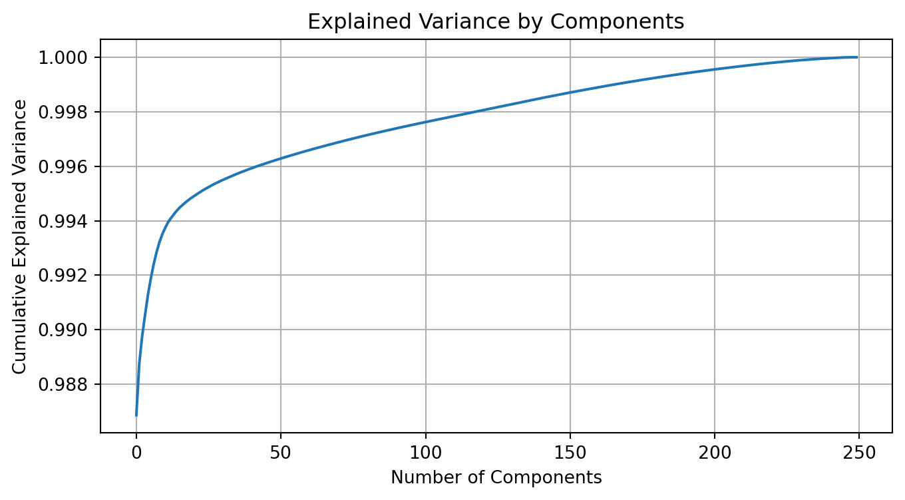
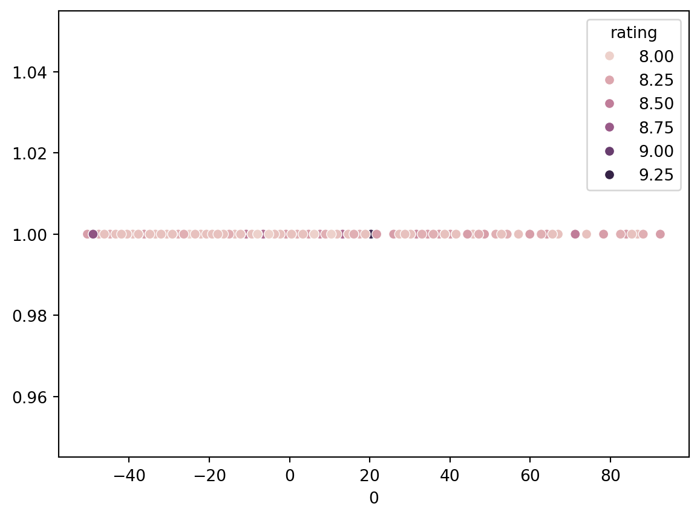
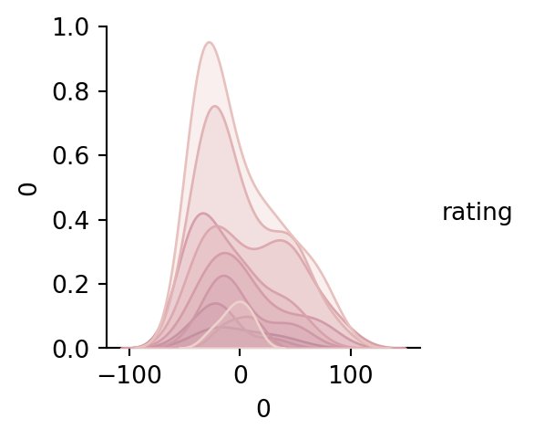
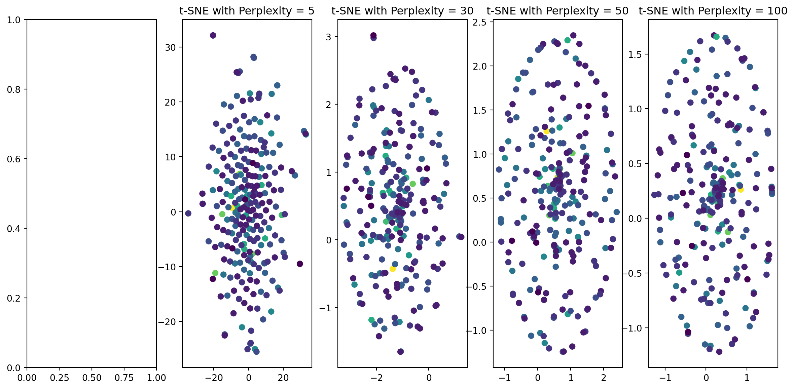

import pandas as pd
file_name = '../../data/others/IMDB_Top_250_Movies_ver2.csv'
df=pd.read_csv(file_name)
df = df.drop(['Unnamed: 0'], axis=1)
print(df.shape)(250, 5)Project’s objectives
Dataset selection Here I select the clean data for the movie data
The tools or libraries The code will be implemented in Python. The library pandas and numpy will be used to read and process the data. The library scikit-learn will be used to implement the model.
Read file
import pandas as pd
file_name = '../../data/others/IMDB_Top_250_Movies_ver2.csv'
df=pd.read_csv(file_name)
df = df.drop(['Unnamed: 0'], axis=1)
print(df.shape)(250, 5)| year | rating | genre | casts | directors | |
|---|---|---|---|---|---|
| 0 | 1994 | 9.3 | Drama | Tim Robbins,Morgan Freeman,Bob Gunton | Frank Darabont |
| 1 | 1972 | 9.2 | Crime,Drama | Marlon Brando,Al Pacino,James Caan | Francis Ford Coppola |
| 2 | 2008 | 9.0 | Action,Crime,Drama | Christian Bale,Heath Ledger,Aaron Eckhart | Christopher Nolan |
| 3 | 1974 | 9.0 | Crime,Drama | Al Pacino,Robert De Niro,Robert Duvall | Francis Ford Coppola |
| 4 | 1957 | 9.0 | Crime,Drama | Henry Fonda,Lee J. Cobb,Martin Balsam | Sidney Lumet |
Preprocess the data
from sklearn.preprocessing import MultiLabelBinarizer
from sklearn.preprocessing import OneHotEncoder
from sklearn.compose import ColumnTransformer
from sklearn.feature_extraction.text import CountVectorizer
import numpy as np
# genre
mlb = MultiLabelBinarizer()
df_genres = mlb.fit_transform(df['genre'])
df_genres = pd.DataFrame(df_genres, columns=mlb.classes_)
df = df.drop('genre', axis=1).join(df_genres)
#casts
df['casts'] = df['casts'].apply(lambda x: x.split(','))
df_casts = mlb.fit_transform(df['casts'])
df_casts = pd.DataFrame(df_casts, columns=mlb.classes_)
df = df.drop('casts', axis=1).join(df_casts)
# certificate
# encoder = OneHotEncoder(sparse=False)
# ct = ColumnTransformer([("certificate", encoder, ['certificate'])], remainder='passthrough')
# df_encoded = ct.fit_transform(df)
# df_encoded = pd.DataFrame(df_encoded, columns=ct.get_feature_names_out())
# df = df.drop('certificate', axis=1).join(df_encoded)
# directors
encoder = OneHotEncoder(sparse=False)
ct = ColumnTransformer([("directors", encoder, ['directors'])], remainder='passthrough')
df_encoded = ct.fit_transform(df)
df_encoded = pd.DataFrame(df_encoded, columns=ct.get_feature_names_out())
df = df.drop('directors', axis=1)
df = pd.concat([df, df_encoded], axis=1)
print(df.head())
X = np.array(df) year rating , - A B C D F H ... remainder__Yuriko Ishida \
0 1994 9.3 0 0 0 0 0 1 0 0 ... 0.0
1 1972 9.2 1 0 0 0 1 1 0 0 ... 0.0
2 2008 9.0 1 0 1 0 1 1 0 0 ... 0.0
3 1974 9.0 1 0 0 0 1 1 0 0 ... 0.0
4 1957 9.0 1 0 0 0 1 1 0 0 ... 0.0
remainder__Yuriy Solomin remainder__Yutaka Sada remainder__Yves Montand \
0 0.0 0.0 0.0
1 0.0 0.0 0.0
2 0.0 0.0 0.0
3 0.0 0.0 0.0
4 0.0 0.0 0.0
remainder__Yôji Matsuda remainder__Yûko Tanaka remainder__Zain Al Rafeea \
0 0.0 0.0 0.0
1 0.0 0.0 0.0
2 0.0 0.0 0.0
3 0.0 0.0 0.0
4 0.0 0.0 0.0
remainder__Zazie Beetz remainder__Zendaya remainder__Çetin Tekindor
0 0.0 0.0 0.0
1 0.0 0.0 0.0
2 0.0 0.0 0.0
3 0.0 0.0 0.0
4 0.0 0.0 0.0
[5 rows x 1404 columns]/opt/homebrew/lib/python3.9/site-packages/sklearn/preprocessing/_encoders.py:975: FutureWarning:
`sparse` was renamed to `sparse_output` in version 1.2 and will be removed in 1.4. `sparse_output` is ignored unless you leave `sparse` to its default value.
Dimensionality Reduction with PCA 1. Apply PCA to record dataset.
PCA()In a Jupyter environment, please rerun this cell to show the HTML representation or trust the notebook.
PCA()
import matplotlib.pyplot as plt
cumulative_variance = np.cumsum(pca_original.explained_variance_ratio_)
n_components = np.argmax(cumulative_variance >= 0.8) + 1
plt.figure(figsize=(8, 4))
plt.plot(np.cumsum(pca_original.explained_variance_ratio_))
plt.xlabel('Number of Components')
plt.ylabel('Cumulative Explained Variance')
plt.title('Explained Variance by Components')
plt.grid(True)
plt.show()
import seaborn as sns
pca = PCA(n_components=n_components)
pca.fit(X)
print(pca.explained_variance_ratio_)
print(pca.singular_values_)
principal_components = pca.fit_transform(X)
df2 = pd.DataFrame(data = principal_components)
df3=pd.concat([df2,df['rating']], axis=1)
sns.scatterplot(data=df2, x=0, y=1,hue=df["rating"])
plt.show()
sns.pairplot(data=df3,hue="rating")
plt.show()[0.98686378]
[560.7301677]

Dimensionality Reduction with t-SNE 1. Implement t-SNE on the same dataset.
from sklearn.manifold import TSNE
from sklearn.preprocessing import StandardScaler
scaler = StandardScaler()
data_standardized = scaler.fit_transform(X)
perplexities = [5, 30, 50, 100]
tsne_results = []
for perplexity in perplexities:
tsne = TSNE(n_components=2, perplexity=perplexity, random_state=0)
tsne_result = tsne.fit_transform(data_standardized)
tsne_results.append(tsne_result)
fig, axes = plt.subplots(1, len(perplexities) + 1, figsize=(15, 7))
for i, tsne_result in enumerate(tsne_results):
axes[i + 1].scatter(tsne_result[:, 0], tsne_result[:, 1], c=df["rating"])
axes[i + 1].set_title(f't-SNE with Perplexity = {perplexities[i]}')
plt.show()
Summay Compare the visualization, PCA is more intuitive in this case
In terms of the trade-offs and scenarios where one technique may outperform the other, here’s the summary:
PCA is a linear algorithm. The principal components are the linear combination of the input variables, thus it is more interpretable. Moreover, it is effective when you need preserve the global structure of the data. Therefore, when reducing the dimension of data, the dimensions with low variance will often be discarded, and potentially losing important information of data.
t-SNE is a non-linear algorithm. Thus it can visualize complex data better than PCA. It is effective when you need preserve the local structure of the data. Therefore, it may not preserve the glocal feature of the data. However, t-SNE costs more computational resources, especially for large datasets.
A comprehensive project report detailing the steps taken, results obtained, and your analysis. Include visualizations, comparisons, and insights gained from the dimensionality reduction techniques.